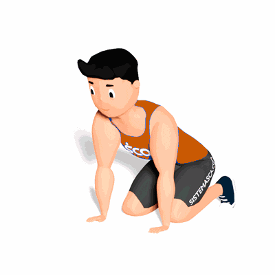

Alongamento Dinâmico do Punho

O exercício tem o objetivo de trabalhar a mobilidade do punho, preparando para a atividade física.
Ficha Técnica
Tipo: Mobilidade
Grupo Muscular: Antebraço
Aparelho: Nenhum
Músculos: Nenhum
Como realizar
- Fique em posição de 4 apoios;
- Mantenha as mãos apoiadas no solo e leve seu corpo para frente, distanciando seu glúteo do calcanhar;
- Mantenha nessa posição por alguns segundos e em seguida retorne a posição inicial;
- Repita os movimentos pela quantidade de vezes prescrito pelo professor(a).
 RC STORE
RC STORE